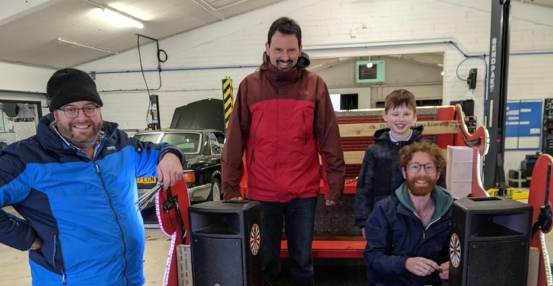
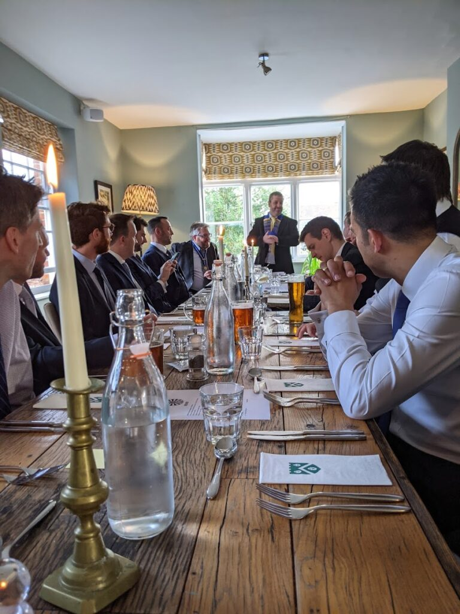
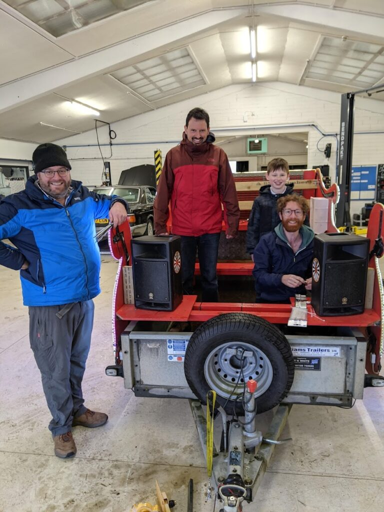

A year in table
It’s been great to help the local community, firstly by putting on fun events such as the fireworks and our Santa sleigh rides, secondly by raising money to support local charities and causes.
I joined the Farnham Round Table in the Autumn of 2020, having been persuaded by a good friend after joining a social at the local brewery and attending one of their committee meetings. It seemed like a great opportunity to do something for the local town, make some new friends and have a good laugh whilst doing so.
The Round Table is an international charity organisation founded in 1927 with over 30,000 members in 60 countries. It is for men from 18-45 with aims to help local communities by putting on community events and raising money to be spent to support local charities. Farnham Round Table has about a dozen members, but also has a large group of ex-members who form the 41 Club that support the events organised by the Table.
At least once a month the Table meets to review any requests for funding. Generally speaking, as long as it is reasonable and supporting the local community we will hand out the money. Funding requests vary from supporting gardening projects at local schools, contributing towards TV equipment at the Farnham Hospital to providing bursaries for local sport or community clubs to help youngsters join in that otherwise couldn’t.
I’ve always been one to step-up and organise things, so I got stuck in, first helping out with our Santa sleigh rides which spread Christmas cheer throughout the town, plus we raised a few thousand for the local Foodbank. We also has a new activity organised, selling and delivering Christmas Trees. One of the Tablers put in a lot of effort to organise this, and had kindly given up his garden for the delivery of a few hundred trees. I helped deliver a number of trees myself, but it was very much about everyone “chipping in” to get the job done. A lot of the money from the Christmas Trees went towards supporting local families in need by providing a shopping voucher towards their Christmas.
It was a quiet start to 2021 with lockdowns still in place, but had a great time at a bush craft day organised by one of the Tablers. We then had our AGM in May, and gathered at the Castle Inn to review the past year, give thanks to all the efforts made and elected a new chairman for the coming year. A few toasts were made and there was lots of good banter and humour! I’d also put my hand up to help with the Farnham Charity Bike Ride for the beginning of July.
The charity bike ride is organised jointly with St. Andrews school and has been running for a number of years, raising money for the school as well other local charities. We can expect anywhere from several hundred to over a thousand riders on the day, all of them taking on one of four routes of varying length. To put on an event like this takes a lot of organising, from arranging road closures with the local council to organising over 50 volunteers to put out the route, register riders, marshal the route and deal with all the incidents that happen on the day. We also had our new sponsors ME Estate Agents helping funding part of the event and getting actively involved in several aspects of the event.
I was put in charge of organising all the marshals for the day, and it involved gathering volunteers from schools and other local organisations such as the Farnham Scouts and The Hedgehogs. Making sure they were all briefed and had all the necessary information as well as dealing with who was going to be where when made for a fun challenge!

The big day came, and it was a very wet start, with Castle Street turning into a small river. Luckily the rain clouds moved on for the start of the event, and although it had deterred some riders, we still had many hundreds turning up! Myself and another Tabler spent the day roaming the routes, helping out by returning riders who had mechanical issues, or helping a family where one of their boys had come off and needed assistance from St Johns Ambulance. It made for a very hectic and long day, but there were lots of smiling faces and we raised a decent amount to go into the charity pot.
After the bike ride, it was time to take a bit of a break for the summer. I should also mention my wife who with my two boys is understanding of the time I commit to the Table! Also managed to attend a couple of socials at the Hogs Back Brewery and meeting up with other Tablers for a board games evening.
The big Autumn event is the Farnham Fireworks and Torchlit procession, after being cancelled the previous year, the team were keen to put on a big event. Like the bike ride, it’s a big community event with scouts, schools and other groups getting involved to make it all work, as well as sponsors such as ME Estate Agents and Hogsback Brewery. This year we did a lot with the local heath trusts to provide them with tickets (and supporting their thank-you activities for key workers) and we had Frimley Hospital Radio providing music and annoncements on the evening. We are increasingly using our website to sell tickets and as we got closer to the event we could see numbers swell. In part due to post-Covid, plus other firework events being cancelled we had to make a call on the day to stop selling any more tickets. Although I wasn’t heavily involved in organising this event, I gave up time to sell tickets, set-up fencing and marshal one of the road closures. The large crowds did present some challenges, but overall there were lots of smiling faces and the fireworks were awesome (we pay the professionals to do it these days!). We also raised a record amount of money. and as well as distributing it to all the community groups involved, we have been steadily handing out further funds around Farnham.
There’s always the tidy-up, I spent a few hours on the Sunday collecting rubbish and my two little boys came and lent a hand. Apart from the remnants of the bonfire, you wouldn’t of known there were over 10,000 people in the park the previous night!

As our thoughts turned towards Christmas, I volunteered to organise the Santa Sleigh. Our sleigh is assembled using a trailer and a wooden frame along with lights and a sound system, so I had to organise getting this built in a local workshop (Hawthorns) and stored at the Farnham Fire Station. Volunteers came from the 41Club and also the local schools. What I most like about this event is the Christmas cheer it gives, and the delight of the children to see Santa! We decided to organise six nights (we could do more if we had a few more volunteers), and also invited the Farnham Mayor to support the event and this helped with getting articles in the Farnham Herald.
We ended up raising over £4000 and as per previous years had decided all the money would go to the Farnham Foodbank and it was very gratefully received and will help many families around Farnham.
I managed to attend the Christmas Party organised by the 41Club at the Frensham Hotel, and was a good way to close out the year with a bit of merriment.
Looking back over the past year, it’s been hard work at times, but very rewarding and I’ve made some good friends and had fun getting stuck-in! When you think the whole Covid situation has generally made things worse in terms of isolating people and the mental health impact, being part of the Round Table has definitely had the opposite effect!
If you’re interested in joining the Farnham Round Table, do get in touch and we can arrange for you to come along to one of our meetings or socials to meet the team.